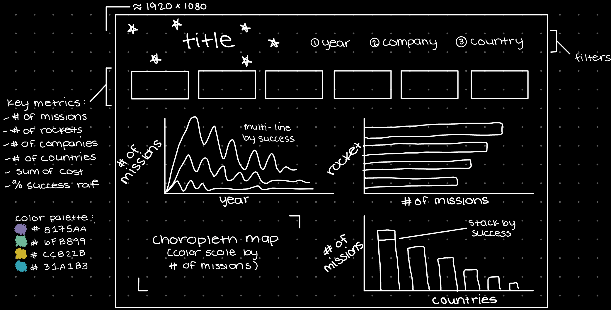

Space Missions 

November 2022
This project explores the Space Missions dataset from Maven Analytic’s Data Playground. This specific dataset was used in the company’s Maven Space Challenge (this is basically a challenge where all participants use the same dataset and use their tool of choice to see who can create the best visualization). I found the data too late to actually participate in this challenge, but did utilize their analysis questions and created a visualization as though I was a participant. I thought this dataset looked interesting and wanted to explore it!
Data
The dataset was downloaded in .csv format and consisted of 4,630 rows of records each representing a space mission from 1957 to August of 2022 and containing information about the name, location, company, rocket, etc.
Import & Preparation
TFor this project, I chose SQL as my tool of choice to clean, transform, and explore the data. To get started, I created a new table in Microsoft SQL Server Management Studio (SSMS) and inserted the data as provided by Maven Analytics
I used simple SQL queries to explore the data and create additional columns that would be used later on while visualizing. I chose to keep all columns (even though not all were utilized) because the dataset only contained 9 columns to begin with. In summary, below are some of the notable transformations performed on the data:
⬥ Used the `MissionStatus` column to create dummy columns containing binary variables for each status
⬥ Parsed `Location` into individual columns for the country, state, base, and site
⬥ New price column which converts previous string format (ex. "1,160" to represent 1,160,000,000) to numeric
Analysis
Below are the questions provided by Maven Analytics for suggested analysis:
1. How have rocket launches trended across time? Has mission success rate increased?
2. Which countries have had the most successful space missions? Has it always been that way?
3. Which rocket has been used for the most space missions? Is it still active?
4. Are there any patterns you can notice with the launch locations?
For the most part, I took these questions into consideration while performing my analysis but definitely did some additional exploring.
--Number of missions attempted per year
SELECT DISTINCT
LEFT(date, 4) AS year
, COUNT(mission) AS 'Count'
FROM projects..spacemissions
GROUP BY LEFT(date, 4)
ORDER BY LEFT(date, 4)
--Success rate (mission_status = 'Success'/ total missions) by year
WITH cte AS (
SELECT *
, CASE WHEN missionstatus = 'Success' THEN 1 ELSE 0 END AS status_success
FROM projects..spacemissions
)
SELECT LEFT(date, 4) AS year
, ROUND(((CAST(SUM(status_success) AS FLOAT)/CAST(COUNT(status_success) AS FLOAT)) * 100), 2) AS success_rate
FROM cte
GROUP BY LEFT(date, 4)
--Success and failure rates by country
WITH cte AS (
SELECT *
, CASE WHEN missionstatus = 'Success' THEN 1 ELSE 0 END AS status_success
, CASE WHEN missionstatus = 'Failure' THEN 1 ELSE 0 END AS status_fail
, REVERSE(left(REVERSE(REPLACE((location), ',', '.')), charindex('.', REVERSE(REPLACE((location), ',', '.')))-1)) AS country
FROM projects..spacemissions
)
SELECT country
, ROUND(((CAST(SUM(status_success) AS FLOAT)/CAST(COUNT(mission) AS FLOAT)) * 100), 2) AS success_rate
, ROUND(((CAST(SUM(status_fail) AS FLOAT)/CAST(COUNT(mission) AS FLOAT)) * 100), 2) AS failture_rate
FROM cte
GROUP BY country
--Total number of rockets
SELECT COUNT(DISTINCT(rocket)) AS total_rocket_count
FROM projects..spacemissions
--Number of rockets per country
WITH cte AS (
SELECT *
, REVERSE(left(REVERSE(REPLACE((location), ',', '.')), charindex('.', REVERSE(REPLACE((location), ',', '.')))-1)) AS country
FROM projects..spacemissions
)
SELECT country, COUNT(DISTINCT(rocket)) AS total_rocket_count
FROM cte
GROUP BY country
ORDER BY COUNT(DISTINCT(rocket)) DESC
--Number of countries and launch locations
WITH cte AS (
SELECT *
, REVERSE(left(REVERSE(REPLACE((location), ',', '.')), charindex('.', REVERSE(REPLACE((location), ',', '.')))-1)) AS country
FROM projects..spacemissions
)
SELECT COUNT(DISTINCT(country)) AS country_count
, COUNT(DISTINCT(location)) AS unique_location
FROM cte
--Total cost
WITH cte AS (
SELECT *
, CAST((REPLACE(price, ',', '')) AS float) as price_updated
FROM projects..spacemissions
)
SELECT SUM(price_updated * 1000000) AS total_cost
FROM cte
--Total cost by country, added success and fail rates to see whether there was a connection between money spent and success
WITH cte AS (
SELECT *
, CAST((REPLACE(price, ',', '')) AS float) as price_updated
, REVERSE(left(REVERSE(REPLACE((location), ',', '.')), charindex('.', REVERSE(REPLACE((location), ',', '.')))-1)) AS [country]
, CASE WHEN missionstatus = 'Success' THEN 1 ELSE 0 END AS status_success
, CASE WHEN missionstatus = 'Failure' THEN 1 ELSE 0 END AS status_fail
FROM projects..spacemissions
)
SELECT country
, SUM(price_updated * 1000000) AS total_cost
, ROUND(((CAST(SUM(status_success) AS FLOAT)/CAST(COUNT(mission) AS FLOAT)) * 100), 2) AS success_rate
, ROUND(((CAST(SUM(status_fail) AS FLOAT)/CAST(COUNT(mission) AS FLOAT)) * 100), 2) AS failture_rate
FROM cte
GROUP BY country
ORDER BY SUM(price_updated * 1000000) DESC
-- Final query used for Tableau file (filled NULLs with 0s)
WITH cte AS (
SELECT *
, CASE WHEN missionstatus = 'Success' THEN 1 ELSE 0 END AS status_success
, CASE WHEN missionstatus = 'Partial Failure' THEN 1 ELSE 0 END AS status_part_fail
, CASE WHEN missionstatus = 'Prelaunch Failure' THEN 1 ELSE 0 END AS status_pre_fail
, CASE WHEN missionstatus = 'Failure' THEN 1 ELSE 0 END AS status_fail
, REVERSE(left(REVERSE(REPLACE((location), ',', '.')), charindex('.', REVERSE(REPLACE((location), ',', '.')))-1)) AS [country]
, REVERSE(REVERSE(PARSENAME(REPLACE((location), ',', '.'), 2))) AS [state]
, REVERSE(REVERSE(PARSENAME(REPLACE((location), ',', '.'), 3))) AS [base]
, REVERSE(REVERSE(PARSENAME(REPLACE((location), ',', '.'), 4))) AS [site]
, REVERSE(REVERSE(PARSENAME(REPLACE((date), '-', '.'), 3))) AS [year]
, CAST((REPLACE(price, ',', '')) AS float) as price_updated
FROM projects..spacemissions
)
SELECT *
, price_updated * 1000000 as price_final
FROM cte
Visualization
Moving into Tableau, I created an interactive dashboard where the user can adjust the year, country, and company fields to update the different graphs and charts. While creating the visual, I kept the following questions in mind:
⬥ How has the number of successful and failed missions changed over time?
⬥ Which rockets have been used most in missions and what is this rockets success rate (hover field)?
⬥ Which countries have completed the most space missions?
The first step I like to take before moving into Tableau, is to draw a mockup of what I envision the dashboard to look like. Below is what I drew using the Notability application on my iPad. The intention for this is not to be an exact copy of the final product, but more to activate the creative side of my brain.

(Dashboard can be found here!)

Takeaways
I would not say I am a huge history buff, but a portion I do enjoy learning about is the Space Race. This dataset displays the competition between the United States and USSR (displayed as Russia) well. We can see that both countries are nearly tied for total space missions approaching 1,500. It was interesting to see the small peak of failed missions toward the beginning (1957) when people first began traveling to space compared to later when successful missions overpower the failed ones.